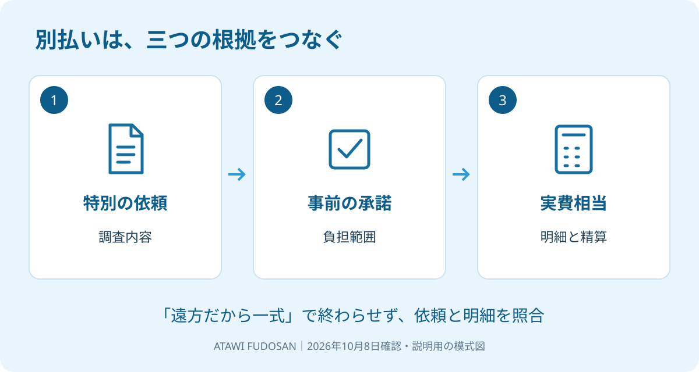

遠方の実家を売ろうと相談したら、仲介手数料とは別に出張費の見積りが出てきた。「遠いから仕方ない」で承諾する前に、何を頼んだ費用なのかを確かめてください。名称だけで、請求の根拠は決まりません。
大石浩之（磐田市／不動産業）です。宅地建物取引士として、私は「遠方だから一式」では売主の手取りを計算できないと考えます。2026年10月8日に国土交通省の資料を確認し、依頼内容、事前の承諾、実費の三つに分けて説明します。
出張費は遠方というだけで決まらない
国土交通省の「宅地建物取引業法の解釈・運用の考え方」は、特別な依頼で必要となる費用について、事前の承諾がある実費相当額を別途受け取ることまで禁止する趣旨ではないと説明しています。本文46頁の告示第十一関係②に記載があります。
例として挙げられているのは、依頼者の特別の依頼による遠隔地の現地調査や、空家の特別な調査などです。同じ箇所には、全国一律の出張費や「何キロを超えたら別料金」という距離の基準は示されていません。
同①では、所定の報酬等以外に、いわゆる案内料や申込料、依頼されていない広告の料金を受け取ることはできないとされています。名目を出張費に変えれば、仲介業務の費用を何でも追加できるという説明ではありません。
私は、必要な特別調査を、内容と費用に納得したうえで選べる余地がある点を評価します。物件から離れた会社へ調査を頼みたい事情があるなら、その選択肢まで閉じる必要はないからです。
そのうえで業者側に注文したいのは、通常の仲介の範囲と、特別に依頼してもらう調査を先に分けることです。売主が「売却を頼んだだけ」と思っているのに、帰社後に追加請求を出しては、依頼の認識が揃いません。
大阪府の2026年10月1日更新の案内は、10月1日から31日を住生活月間と紹介しています。住まいの依頼内容を点検する機会として取り上げました。出張費のルールが2026年10月に変わった、という意味ではありません。

確認1：何を特別に依頼したか
別途の出張費が提示されたら、まず「どの調査を、誰が、何のために頼むのか」を確認します。国土交通省の説明にある特別の依頼と、自分の依頼内容が対応しているかを見るためです。
「一度物件を見てほしい」という言葉だけでは、通常の査定訪問を指すのか、追加の調査を指すのかが分かれます。訪問先、確認項目、必要な資料、結果をどう報告するかを見積りの前提として聞きます。何を得るための訪問なのかが見えれば、頼むかどうかを判断できます。
売主自身が遠方に住んでいることと、調査のために業者が遠隔地へ出向くことも別です。物件近くの業者へ依頼している場合は、家族の住所が遠いという理由だけで調査出張費の説明が済んだと考えないでください。
見積りの名前が「現地確認費」「交通費」「調査費」であっても、確認する中身は同じです。通常の仲介報酬と何が違い、どの依頼に対応する費用なのか。金額の値引きを相談する前に、その説明を求めるのが私の案内です。
仲介そのものの報酬を確認したい場合は、仲介手数料の考え方を先に読めます。追加実費だけを見て業者を比較せず、仲介報酬を含めた支出の内訳を揃えます。
確認2：出発前にどこまで承諾したか
特別な調査の費用負担は、調査に出る前に範囲を確かめます。国土交通省の説明では、負担について依頼者の事前承諾があることが示されています。作業が終わってから総額を知る形にしないための確認です。
| 承諾前の項目 | 聞く内容 |
|---|---|
| 調査内容 | 訪問先、確認事項、成果の報告方法 |
| 予定費用 | 交通手段、宿泊の有無、実費の概算 |
| 追加の扱い | 予定額を超える場合の連絡と再承諾 |
| 中止・不成立 | 調査中止時や売却不成立時の精算条件 |
私は、口頭だけにせず、メールや見積書などで同じ内容を残すよう勧めます。資料が書面だけを唯一の成立条件にしているという説明ではありません。後で「誰がどこまで了解したか」を確かめられるようにする実務上の提案です。
家族の一人が連絡係をしているときは、費用を負担する本人と承諾内容を共有します。連絡係が日程を調整したことを、そのまま金額の承諾に置き換えないようにします。代理権や相続関係の個別判断は専門家に確認を。
売れなかった場合の扱いも、私は先に質問します。仲介報酬と特別調査の実費を混ぜて「成約しなければ全部ゼロ」と推測しないためです。どの条件で費用が発生するかは、具体的な依頼内容と合意を確認してください。
広告費にも別払いの論点がありますが、出張費と同じ袋に入れません。売却の広告費を別途払う前の確認も参照し、それぞれ何を依頼した費用かを分けます。
確認3：実費の内訳と精算方法を見る
実費相当額の確認では、出張一回の総額だけでなく、交通費などの内訳を見ます。私は、概算と実際にかかった費用を並べ、どの資料で精算するかを依頼前に決める方法を提案します。
計算例として、往復の交通費8,000円と駐車料金1,000円を置きます。ほかの費用を含めなければ合計9,000円です。これは相場でも請求可能額の判定でもない仮定の数字です。一回の調査なら9,000円、同じ条件で二回なら18,000円と、訪問回数が家族の負担に直結します。
だから私は、「一回分の金額はいくらか」と一緒に「何回を予定しているか」を聞きます。二回目が必要になったときの連絡も決めます。人件費や調査報酬など別の項目が載っていれば、交通実費と同じものとして流さず、依頼と請求の根拠を聞きます。
領収書などの明細で確認する方法はありますが、紙が一枚あるだけで請求全体が適切と決まるわけではありません。特別の依頼、事前承諾、費用の内容がつながっているかを見ます。三つのうち一つだけ確認して終わらせないことです。
相談や調査を別契約で頼む話が出た場合は、相談料と仲介業務の境目も整理してください。契約名を増やすだけで、費用の説明が不要になるわけではありません。
磐田・袋井の実家なら依頼先と調査範囲を比べる
磐田市・袋井市の実家を遠方から売るなら、地元の会社と、家族の近くの会社で調査方法を比べられます。私は「地元なら必ず追加費用なし」とは約束しません。訪問の範囲と回数を同じ条件で比べるのが先です。
長く付き合いのある遠方の業者に頼む安心と、物件近くの業者が動く効率のどちらを優先するか、私も迷います。だから、距離だけで依頼先を決めず、必要な調査、報告の質、総支出を揃えてから選んでほしいと思います。
私はこう考えます。出張費の見積書を前に家族と話す場面なら、最初に金額を丸で囲みません。「何を頼む」「いつ承諾する」「何で精算する」の三欄を余白に作ります。一つでも空いていれば、業者へ質問してから依頼します。これは実際の相談の再現ではなく、私の提案です。値引きができたという満足より、払う理由が家族に説明できる状態を目指します。
- 今日、見積りの出張費の行に調査内容を添える。
- 事前承諾の記録と追加時の連絡方法を確認する。
- 仲介報酬と実費を分け、総支出を比べる。
富士ヶ丘サービスは、磐田・袋井に特化し、介護と不動産を一体で相談できる窓口です。家族が困らない売却のため、私は金額だけでなく依頼の範囲を説明します。請求の適法性に疑問が残る場合は、免許行政庁の相談窓口や弁護士などへ個別に確認してください。